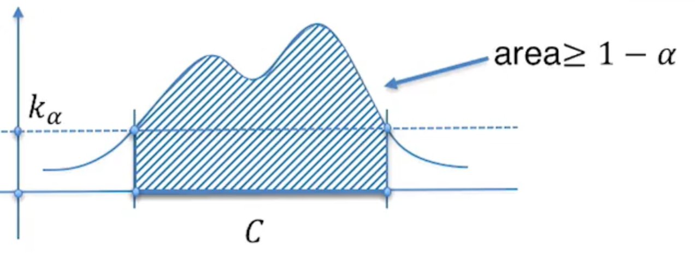
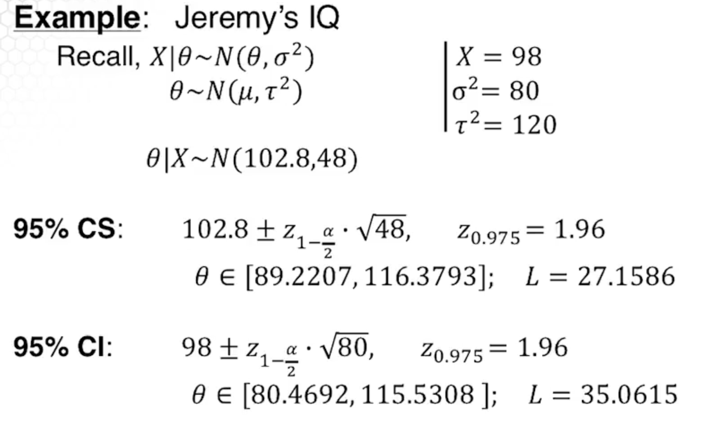
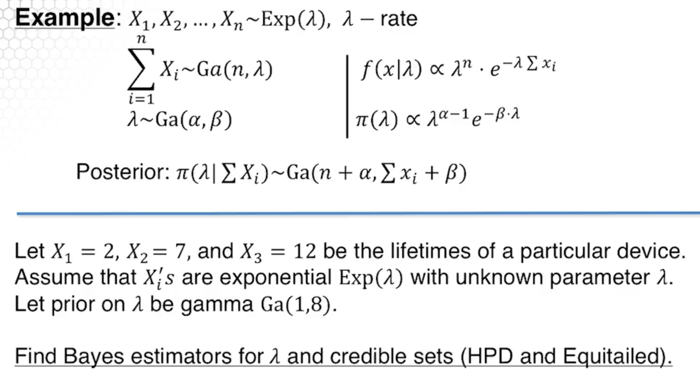
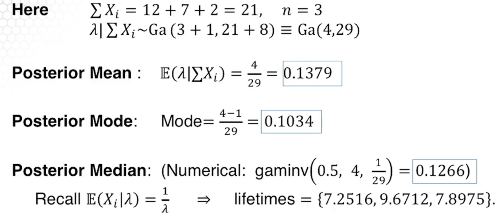

Credible sets¶
Philosophy¶
For a continuous posterior, the probability of the posterior taking any particular value is 0. To deal with this we do interval estimation, finding an interval where the parameter likely is.
This is different than classical statistics, where the parameter is some unknown constant value. Given the experiment, we have a confidence interval which is interpreted as
In the long run, by repeating an experiment many times, the proportion of times that this an interval contains the unknown parameter, is having some high probability. Note that the interpretation of a confidence interval in frequentist statistics is indeed quite confusing.
For credible sets the probability that the parameter is in the interval is given. The probability of a parameter being in an interval doesn’t make sense from a frequentist perspective because we assume this parameter is constant.
Credible Sets¶
Assume we have the following information -
\(C\) is a credible set with credibility \(1-\alpha\) if
Highest Posterior Density (HPD) Credible Sets¶
The following diagram is given:

Equitailed Credible Sets¶
Example 1¶

Notice that the interval is shorter for the bayesian method. The bayesian method also has a different interpretation of the interval.
Example 2¶
We have \(X_1, X_2,...,X_n \sim \text{Exp}(\lambda),\lambda=\text{rate}\)
The posterior is:


U4L11¶
This is a matlab program. See the lecture.